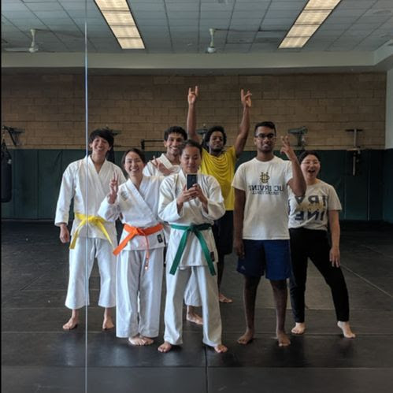

Are you passionate about learning martial arts? Come check out the Nihon Karate Club at UCI!
We'd be happy to have you join us, whether you're completely new to karate, or a black belt. We work hard to motivate our members to always strive for their best, while ensuring that they can feel comfortable learning at their own pace so that all members are adequately challenged at their respective levels of experience. Do not worry too much about your skill level and if you have not trained in martial arts before; we are open to teaching everyone who is eager to learn karate. It is a great opportunity to learn self defense techniques in a safe environment.
What is karate?
Karate (空手) is an umbrella term for striking martial arts originating from Japan. The word "karate" translates to "empty hand", referring to the employment of various kicking, hand, elbow, and knee techniques as opposed to weaponry. The specific style NKC trains under is Shindo̅ jinen-ryu̅, one of the six original schools recognized by Dai Nippon Butoku Kai (the first government sanctioned martial arts organization in Japan) in the 1930s. In addition to the standard striking techniques used in most other karate styles, Shindo̅ jinen-ryu̅ draws influence from jujitsu, aikido, and kendo.
What do you do in karate?
We mainly do three types of training: kihon, kata, and kumite. Kihon is a term meaning "basics" or "fundamentals" and we practice the essential techniques of karate such as stances, punches, kicks, block, etc. Kata means "way of doing" and we learn a series of movements and techniques that simulates a real fight. Last but not least, kumite means "sparring" and this is when we execute our live knowledge in engaging an opponent with what we have learned.
Why should I learn karate?
There are numerous physical, mental, and social benefits for learning karate.
- Physical Benefits:
- Strengthen your cardiovasular system
- Strengthen your core
- Increase your flexibility
- Enhance your reflexes
- Improve balance and agility
- Mental Benefits:
- Build confidence
- Learn to overcome fear
- Improve mental toughness
- Master the art of patience
- Greater perseverance in tackling challenges
- Learn respect
- Social Benefits:
- Become part of the karate community
- Build life-long friendships
- Motivate and inspire others
- Learn about the art & culture & philosophy of Japan
Why should I join the Nihon Karate Club?
Being part of the Nihon Karate Club includes:
- Opportunities to compete in tournaments held throughout Southern California
- A family-like social network with its own unique culture
- Lessons from highly esteemed martial artists
- Self-defense, sports, and recreational training
- Relief from stress
- Promotion of peace and harmony
- Fun and exciting club events and activities
How do I join?
NKC membership is limited to current UCI students and staff. Brief registration instructions can be found below. A more detailed guide, with pictures, is available here!
- NKC is part of the UCI Club Sports program, so the first step of our registration process is making a DoSportsEasy (DSE) account with UCI Campus Recreation, which oversees Club Sports. You can make an account here!
- Once you’ve made an account, please fill out the DSE registration. This will include entering some personal information, as well as paying the annual $15 Club Sports fee that supports the club sports organization. Keep in mind this process will enable you to join ANY club sport, not just NKC.
- You’re almost there!Once you’ve filled out your info on DSE, add yourself to our roster here!
- This is the final step! Our club collects its own club dues to provide members with a number of benefits, including sponsorship for gi purchases, payment tournament registration fees, carpools to practices and events, sparring equipment for practices, and more! Our dues are $15 a quarter, or $40 for the entire year.
Covid-19 Update:
In order to ensure our members' safety, we are no longer conducting an in-person training session. Instead, we are using an application called Zoom and have our Sensei or Senpai teach us online. Our current schedule is Wednesday 6:00-7:00 PM and Saturday 10:00-11:00 AM and 1:00-2:30 PM. Anyone is welcome to join, and feel free to reach out to us at karate@uci.edu for more information.
For Fall quarter, the $15 fee will not be required because we will host training online. For upcoming quarters if karate training is in person, then the fee will be required.
I'm not sure about this whole karate thing...
Don't worry, we've all been there. If you're still on the fence, then we'd recommend dropping by one of our Zoom practices. Shoot an email to the officers karate@uci.edu, and we’ll help you get set up!
I have some other questions.
Feel free to send an email to the officers at karate@uci.edu, and we'll be happy to answer any of your additional questions. If you’re interested in learning more about us, come check out our Instagram and Facebook pages.